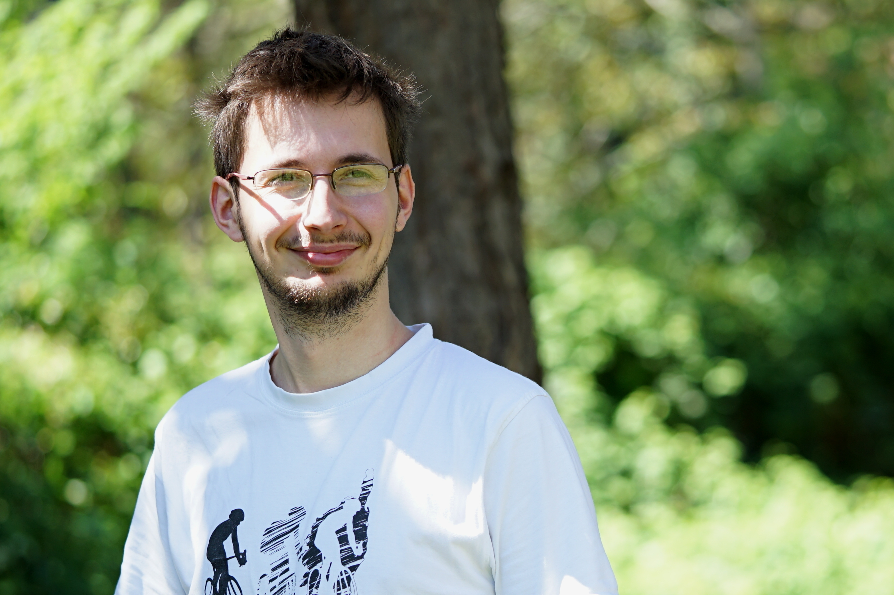

Email | Twitter | Google Scholar
I am a postdoctoral research fellow working at the intersection of evolution and medicine. I am applying my background in evolutionary theory gained with the Traulsen lab at the Max Planck for Evolutionary Biology to study the evolution of therapeutic resistance in cancer and bacteria. At Theory Division, I am excited to engage in translational research bringing evolutionary therapy closer to realization while at the same time, to have the freedom to randomly explore the landscape of scientific inquiries.